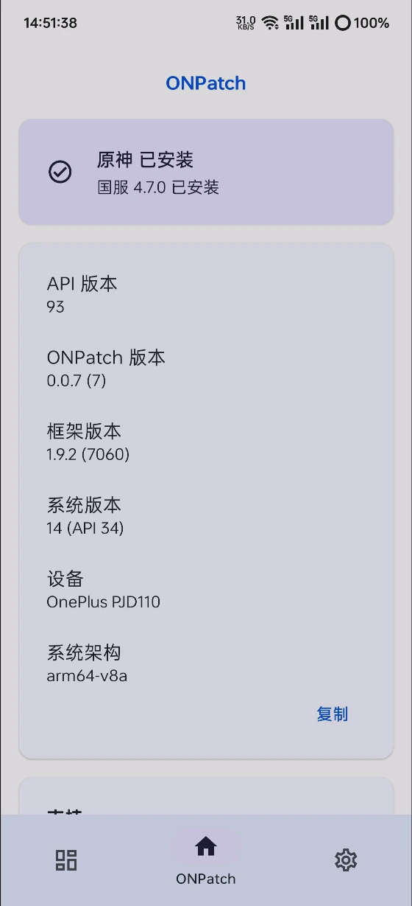
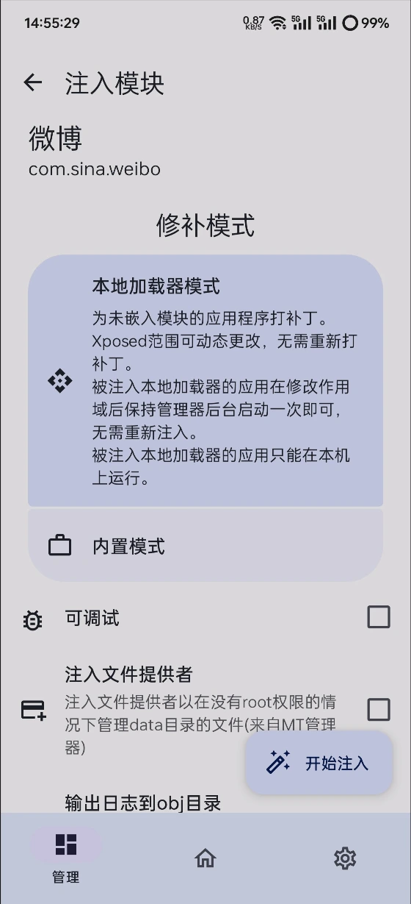

LSPatch 用了大半年：从 Shizuku 连不上到脚本化批量修补
装 LSPatch 到现在快八个月，从每次 Shizuku 都要折腾半小时到命令行版一条命令出包，中间踩了不少坑也慢慢摸到了门道。
当初为什么装
起因很简单——想给微信加个消息防撤回的 Xposed 模块。之前一直用 LSPosed（需要 Magisk Root），换了新手机后不想折腾 Root，就去 LSPatch官网 了解了这个方案。不用 Root，把 Xposed 模块直接嵌进 APK 里打包成一个新应用，装上就生效。理念上挺吸引人的，就从 官方下载 了一个 opatch 分支的 Manager 试试。

变化三连
哪点越用越顺手
Shizuku 连不上的坑，踩一遍就记住了。
第一次启动 Shizuku 时，USB 调试开着但 Manager 死活说 "Shizuku unavailable"。翻了一圈才发现我用的是 MIUI——除了普通 USB 调试，还有一个单独的「USB 调试（安全设置）」开关藏在开发者选项里，默认关着。两个都开了才通。后来换电脑、换线、换 Wi-Fi，慢慢摸出一套自检顺序：先 adb devices 看手机在不在列表里，再确认 Shizuku App 里是 "running" 还是 "not running"，最后去已授权应用列表给 LSPatch Manager 开权限。三步走完基本没失手过。
opatch 分支去掉了锁后台的要求，这一点太香了。
原版 LSPatch Manager 要求 Shizuku 服务一直锁在后台，不能被系统杀掉。安卓厂商的杀后台机制五花八门，我之前用原版的时候经常一觉醒来 Shizuku 就没了，第二天还得重新执行一次 start.sh。opatch 把这个依赖去掉了，Manager 直接走 shell 命令调 adb，不需要 Shizuku 常驻。装完 opatch 那天晚上我特意重启了三次手机试，每次打开 Manager 直接就能用，没再出现过"Shizuku unavailable"的红色提示。
命令行版让修补从"手动点来点去"变成了脚本化流水线。
手机上 Manager App 修补一两个 APK 还行，但我有时候要一次性给七八个应用都加上同一套模块——逐个点加号选应用、选模块、等修补完成，重复操作很累。后来发现 LSPatch 有个 lspatch.jar 可以在电脑上跑，装个 JRE 17 就能用。写了个简单的 PowerShell 循环，把 input 目录下所有 APK 逐个修补，模块作用域配置都在命令行参数里指定，修补完自动输出到 output 目录。第一次跑完看着 output 文件夹里整齐躺着六个修补好的 APK，感觉效率至少翻了三倍。

哪点越用越烦
应用商店更新 = 手动下新版 APK 重修补 = 卸载旧版 = 清数据。
这是 LSPatch 整个方案最让我头疼的地方。每次应用商店提示"微信有新版本"，我不能直接点更新——因为修补后的 APK 签名和原版不一样，Android 系统不允许覆盖安装。流程是：卸载旧修补版（清空应用数据）→ 去 APKPure 或 APK Mirror 下载最新版原版 APK → 传到手机 → 打开 LSPatch 重新修补 → 重新安装。一个应用走一遍这个流程大概要七八分钟，应用更新频繁的时候简直是日常噩梦。
我试过几种偷懒的办法：用电脑端 CLI 先把新版 APK 修补好，再传到手机装，省掉"传到手机再修补"这一步；用 Titanium Backup 之类的工具备份应用数据，卸载后恢复——但后者对部分加固应用不生效，数据还原后应用会崩。目前能做到的最省时流程还是：电脑端下载 + CLI 批量修补 + 手机端统一卸载安装。
部分加固应用的修补成功率就是不稳定。
有几个国产 App 用了厂商自己的加固方案（某音、某手的某些版本），LSPatch 修补过程能跑完，但装完打开直接闪退或者触发安全校验秒退。这个跟 Shizuku 无关，也不是我配置错了——纯技术上的对抗。碰到这种情况只能放弃或者等社区有没有人出专门的适配方案。
无线调试的配对流程每次都让我有点紧张。
配对和连接是两步，端口号不一样，我每次都得对着 LSPatch文档 再核对一遍。路由器开了 AP 隔离的话直接连不上，某些公共 Wi-Fi 更是根本不行。现在只在需要用 Shizuku 快速安装的时候才连无线调试，平时还是 USB 插线更稳。
哪个功能成了每天离不开的
Shizuku 快速安装。
修补完 APK 之后，不用手动打开文件管理器找那个修补好的文件、点安装包、等系统确认弹窗——Manager 里直接有个"快速安装"按钮，一点就装。这个动作省了至少三四步操作，而且在电脑端 CLI 修补完后，用 adb 把输出目录推到手机存储，再打开 Manager 点快速安装，整个流程从十几分钟压缩到三五分钟。
哪个碰都没再碰
模块作用域的精细化配置。
Manager 里给每个模块可以单独配置作用域——只对某些应用生效、排除某些包名、甚至精确到活动页面。我刚用的时候花了不少时间调这个，后来发现其实"全应用生效"就够用了，大部分场景不需要细分。现在修补时直接用默认配置，懒得调。
观感修正
当初装 LSPatch 是奔着"免 Root 用 Xposed"的点来的，心里把它当成一个"给手机装后门"的黑科技工具。用了大半年才想明白，它本质上就是个 APK 打包工具——把 Xposed 核心以"嵌入式模块"的方式注入到应用里，重新签名，产出一个能独立运行的 APK。跟什么"黑科技"没关系，就是 Java 层面的类加载劫持原理。反直觉的是：我当初觉得 Root 才是正道，LSPatch 只是没有 Root 时的权宜之计。现在反过来想，真的需要 Root 吗？LSPatch 能做到的事情——加模块改行为、去广告、增强功能——对我来说已经够用了。Root 的那些功能（改系统参数、替换系统组件、自动化脚本），我其实从来没真正用到过。所以现在 LSPatch 从"备选方案"变成了主力，LSPosed 反而被我放在一边吃灰了。
去留结论
不会卸载。 大半年用下来，它帮我在不 Root 的前提下解决了几个真实需求——消息防撤回、某 App 的去启动广告、抖音无水印下载模块——这些功能在其他地方找不到替代方案。
什么信号出现就该换？ 两个触发条件：一是 opatch 分支停更、没人维护了；二是 Android 新版本彻底封死了这条注入路径，修补后的 APK 连装都装不上。目前看 opatch 社区还挺活跃的，Android 版本更新也没见封堵的迹象，短期内应该会继续用下去。
说个反直觉的：LSPatch 最让我满意的不是它的功能，而是它让我重新想了一遍"我到底需要 Root 吗"这个问题。结论是不需要，挺久没 Root 手机了，日子过得也挺好的。
这套资料在 GitHub、Gitee、GitCode 三个仓库都有同步，方便不同网络环境下取阅。opatch 分支的更新和问题追踪主要在 GitHub 上，Gitee 和 GitCode 更多是文档和归档用途。